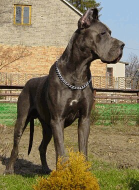
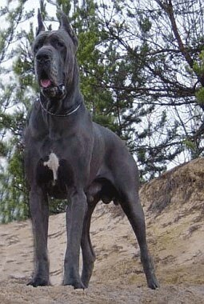

Izydor
- Interchampion
- Champion Polski
- Zwycięzca Klubu i Zwycięzca Polski 2004
- Młodzieżowy Champion i Zwycięzca Polski '02

Quixote del Regno di Fantasia
- Interchampion
- Champion Polski i Champion Węgier
- OKV Bundessieger '06
- Mł. Zwycięzca Klubu Węgier '05

Billy the Kid Out of Law… Balao
- Champion Polski
- Młodzieżowy Zwycięzca Klubu '04
- Młodzieżowy Zwycięzca Polski '04
- Młodzieżowy Champion Polski

Picador Personal Effect… Balao
- Champion Estonii
- Champion Litwy
- Champion Łotwy

Nothing Else Matters Balao
- Młodzieżowy Champion Polski

November Rain Balao
- Młodzieżowy Champion Polski
Profile pochodzą z archiwum dawnej strony balao.pl — daty i tytuły uzupełniamy wspólnie z hodowczynią.